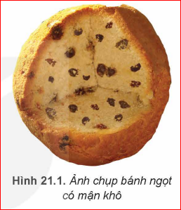
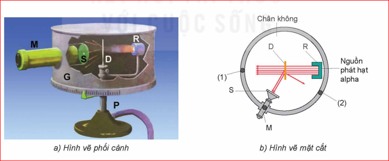
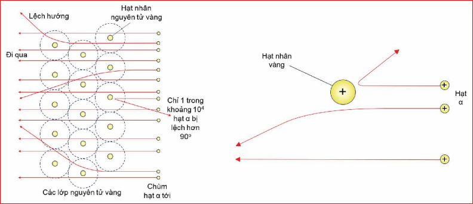
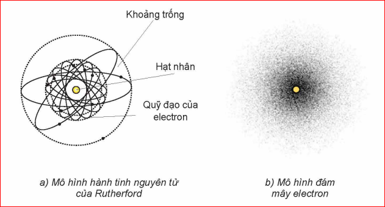
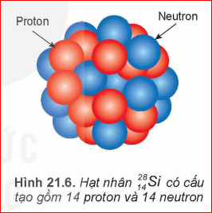
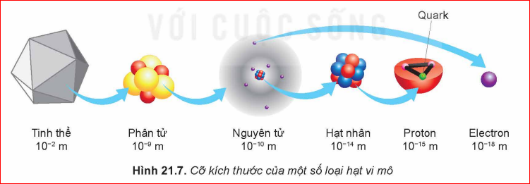

Kích thước nguyên tử nhỏ tới mức kính hiển vi quang học hiện đại nhất cũng không thể giúp chúng ta quan sát rõ. Hạt nhân có kích thước còn nhỏ hơn rất nhiều (khoảng 0,0001 lần) so với nguyên tử. Các nhà khoa học đã làm thế nào để phát hiện ra điều đó?
I. THÍ NGHIỆM TÁN XẠ HẠT ALPHA
1. Mô hình Thomson (Mô hình bánh mận)

Electron như những quả mận đặt trong khối điện dương.
2. Mô hình Rutherford

Minh họa đường đi các hạt Alpha

Hầu hết đi thẳng, một số ít lệch hướng, và cực ít (1/10.000) bị bật ngược lại.
Thảo luận:
- Tại sao phần lớn các hạt alpha đi xuyên thẳng qua lá vàng?
- Việc một số ít hạt alpha bị lệch hướng hơn 90° chứng tỏ điều gì về cấu trúc nguyên tử?
2. Chứng tỏ ở tâm nguyên tử có một hạt nhân tích điện dương, kích thước rất nhỏ nhưng tập trung hầu hết khối lượng nguyên tử.

Em có biết:
Mẫu hành tinh nguyên tử của Rutherford không giải thích được tính bền vững của các nguyên tử và sự tạo thành quang phổ vạch của các nguyên tử. Năm 1913 , Bohr (Bo) đã dựa trên mô hình nguyên tử của Rutherford và vận dụng thuyết lượng tử ánh sáng để đề xuất mẫu nguyên tử mới gọi là mẫu nguyên tử Bohr. Trong mẫu này, Bohr vẫn giữ mô hình hành tinh nguyên tử của Rutherford nhưng đã bổ sung các tiên đề về cấu trúc nguyên tử. Mẫu này đã giải thích được sự tạo thành quang phổ vạch của các nguyên tử, đặc biệt là của nguyên tử hydrogen. Tuy nhiên, mô hình nguyên tử của Bohr không giải thích được nhiều tính chất của các nguyên tử khác. Hiện nay, người ta vận dụng các lí thuyết của Erwin Schrödinger (Ê-uyn Srô-đin-gơ) để đưa ra mô hình đám mây điện tử. Trong mô hình này, các electron có thể xuất hiện ở mọi vị trí trong không gian nguyên tử với xác suất nào đó và mật độ xác suất có mặt của electron được biểu diễn bằng các đám mây electron. Mô hình này có thể giải thích được quang phổ vạch của các loại nguyên tử.
II. NUCLEON VÀ KÍ HIỆU HẠT NHÂN
1. Nucleon
Hạt nhân được tạo thành bởi hai loại hạt là proton và neutron, gọi chung là nucleon.
- Proton (p): \(m_p \approx 1,67262.10^{-27}\) kg, điện tích \(q = +e\).
- Neutron (n): \(m_n \approx 1,67493.10^{-27}\) kg, trung hòa về điện.

Đơn vị khối lượng nguyên tử (amu):
1 amu \( \approx 1,66054.10^{-27} \) kg
(Bằng 1/12 khối lượng nguyên tử đồng vị Carbon-12)
Xác định khối lượng của proton và neutron theo đơn vị amu?
Bán kính hạt nhân:
\( R = 1,2.10^{-15} \cdot A^{1/3} \) (m)
Dựa vào công thức, bán kính hạt nhân phụ thuộc vào đại lượng nào?
| Tên nguyên tố | Số khối (A) | Bán kính nguyên tử (\(10^{-10}m\)) | Bán kính hạt nhân (\(10^{-15}m\)) |
|---|---|---|---|
| Hydrogen | 1 | 1,2 | 0,9 |
| Oxygen | 16 | 1,5 | 2,7 |
| Sắt | 56 | 1,9 | 3,7 |
| Vàng | 197 | 1,7 | 5,4 |

2. Kí hiệu hạt nhân
Hạt nhân của nguyên tố X được kí hiệu: \( {}_{Z}^{A}X \)
- - X: Kí hiệu hóa học.
- - A: Số khối (Tổng số nucleon).
- - Z: Số hiệu nguyên tử (Số proton).
- - N = A - Z: Số neutron.
Viết kí hiệu hạt nhân vàng (Au) biết số nucleon là 197 và số proton là 79?
III. CỦNG CỐ
Em đã học
- - Hạt nhân rất nhỏ so với nguyên tử (\(10^{-4}\) lần).
- - Cấu tạo từ proton và neutron.
- - Kí hiệu hạt nhân \( {}_{Z}^{A}X \).
Em có thể
- - Giải thích cấu tạo thế giới vi mô.
- - Tính toán kích thước, khối lượng hạt nhân.
Trắc nghiệm
Bài tập tự luận (Nâng cao)
Bài 1: Tính khối lượng riêng của hạt nhân sắt (\(A=56\))? Coi hạt nhân là hình cầu.
- Thể tích: \(V = \frac{4}{3}\pi R^3 \approx 4,07.10^{-43}\) m³.
- Khối lượng: \(m \approx 56 \cdot 1,66.10^{-27} \approx 9,3.10^{-26}\) kg.
- Khối lượng riêng: \(D = m/V \approx 2,3.10^{17}\) kg/m³. (Cực lớn!)
Bài 2: Tính lực đẩy Coulomb giữa hai proton trong hạt nhân Helium cách nhau \(10^{-15}\) m?
Với \(q_1 = q_2 = 1,6.10^{-19}\) C, \(r = 10^{-15}\) m.
\(F = 9.10^9 \cdot \frac{(1,6.10^{-19})^2}{(10^{-15})^2} \approx 230\) N.
Bài 3: Giải thích tại sao nguyên tử trung hòa về điện nhưng hạt nhân lại tích điện dương?